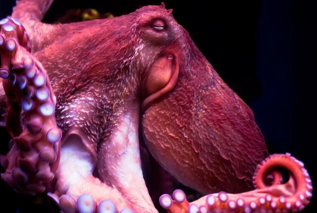
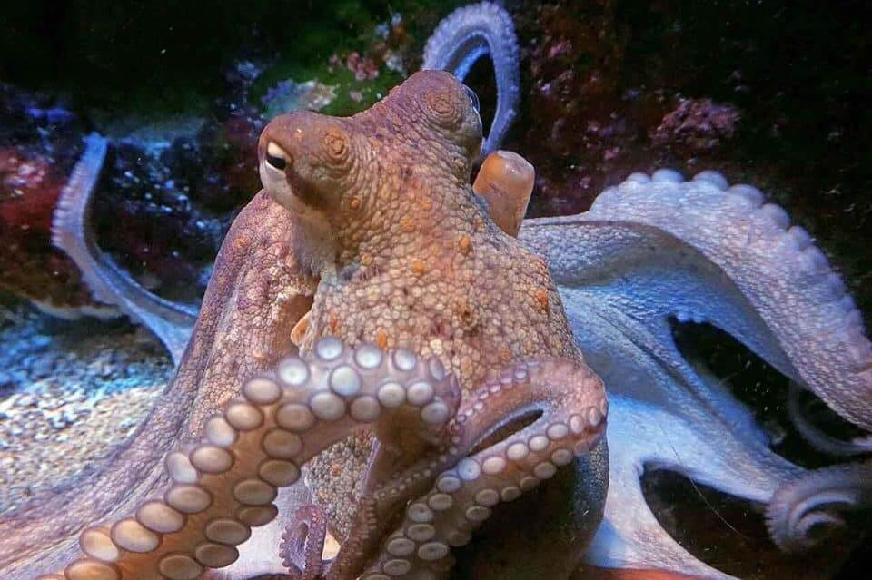
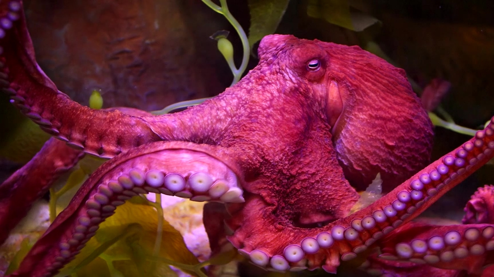
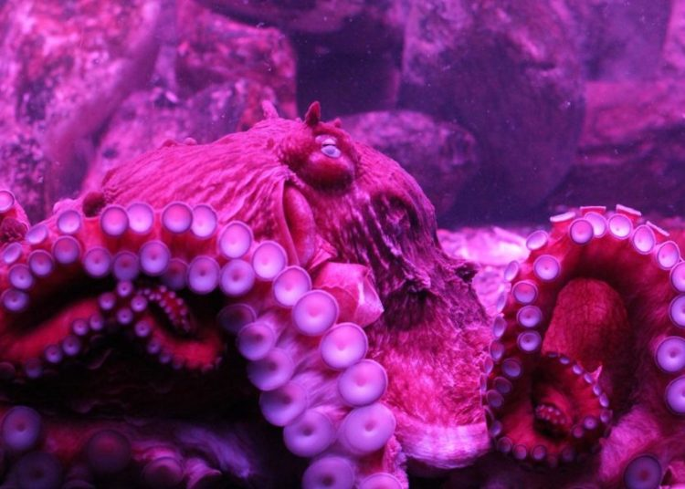
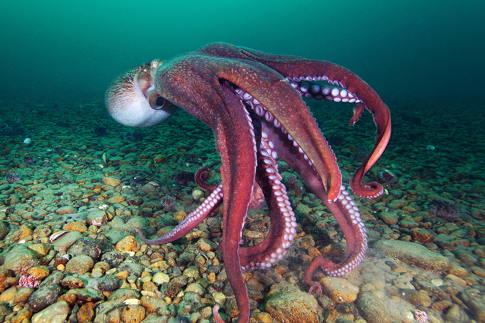
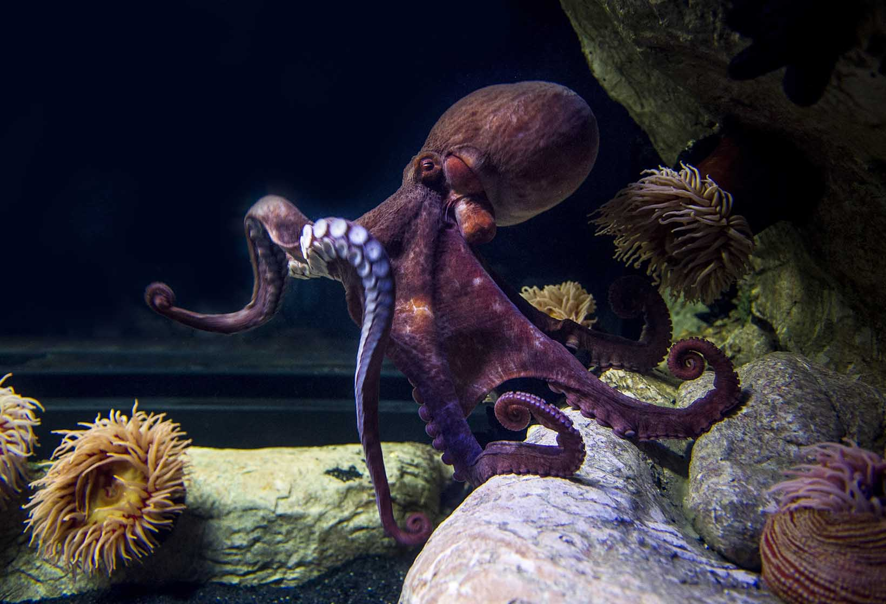
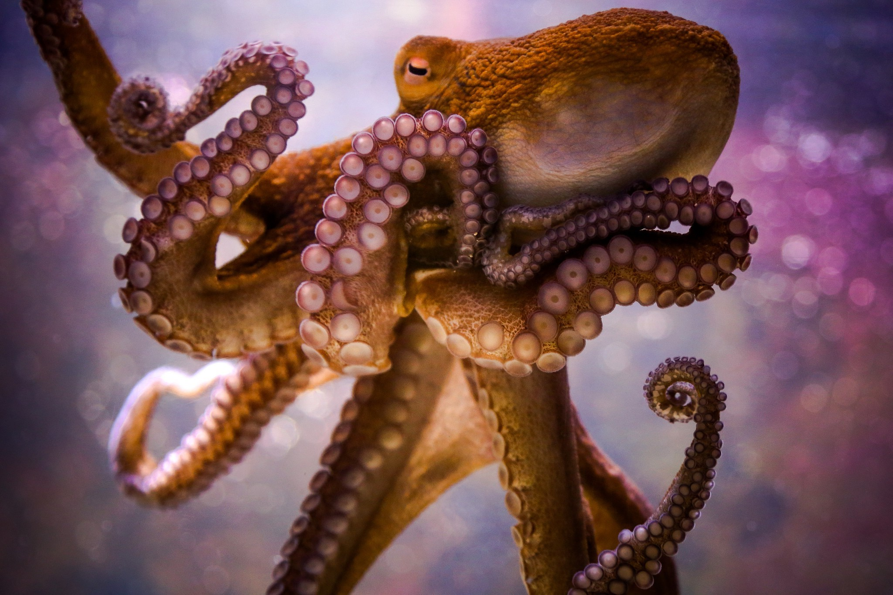
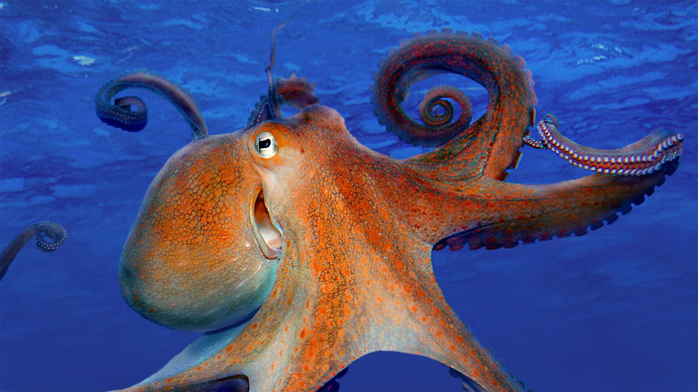
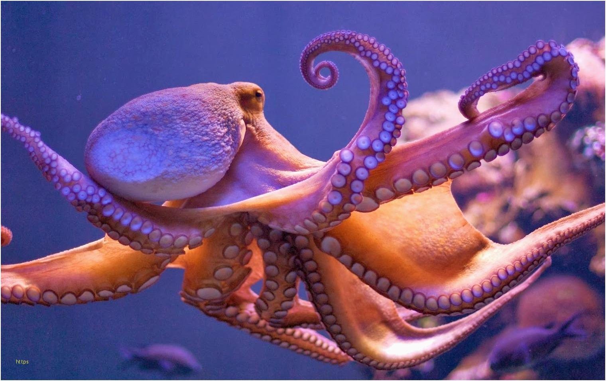

|

Adaptações para o ambiente aquático:Informações sobre suas adaptações para o meio aquatico |

|

|
|

Regulação de água no corpo:Informações sobre a regulação de água no corpo e respirção dos polvos |

|

|
|

Informações sobre seu organismoInformações sobre: Sistema respiratório, Sistema circulatório, Sistema nervoso |

|

|
Reino: Animalia |
Filo: Mollusca |
Simetria: Bilateral |
Classe: Cefalópodes |
Ordem: Octopoda |
|
Família: Octopodidae |
Gênero: Octopos |
os polvos respiram por meio de uma abertura que fica na região do manto — que permite que a água entre em seus corpos e chegue até as guelras. A água entra por uma abertura e sai pelo sifão perto da cabeça do polvo. Quando esses animais expelem o líquido, muitas vezes eles aproveitam para eliminar seus dejetos, é assim que os polvos e muitos cefalópodes respiram!
Cada um possuindo diversas ventosas. Basicamente, a locomoção do polvo acontece de algumas formas. Quando estão em alguma superfície, podem rastejar utilizando seus tentáculos, ou agarrando suas ventosas em elementos disponíveis como rochas. Quando estão flutuando em água, utilizam uma técnica com seu próprio corpo.
Outra forma que o polvo utiliza para se defender é a camuflagem. Em questão de segundos esse animal é capaz de mudar completamente de cor, ficando com as mesmas cores da areia ou de uma pedra, enganando seus predadores e também suas presas. A camuflagem é um meio de defesa dos polvos.
O polvo é um animal extremamente inteligente e que cuida de si proprio des do inicio de sua vida.
Neste filme o polvo macho laranja Hank, se mostra muito esperto tendo varias ideais e elaborando planos na ideologia para poder salva a Dory.
Filme dirigido pela Disney, onde um pequeno polvo roxo femea chamada pérola tem uma pequena participação.